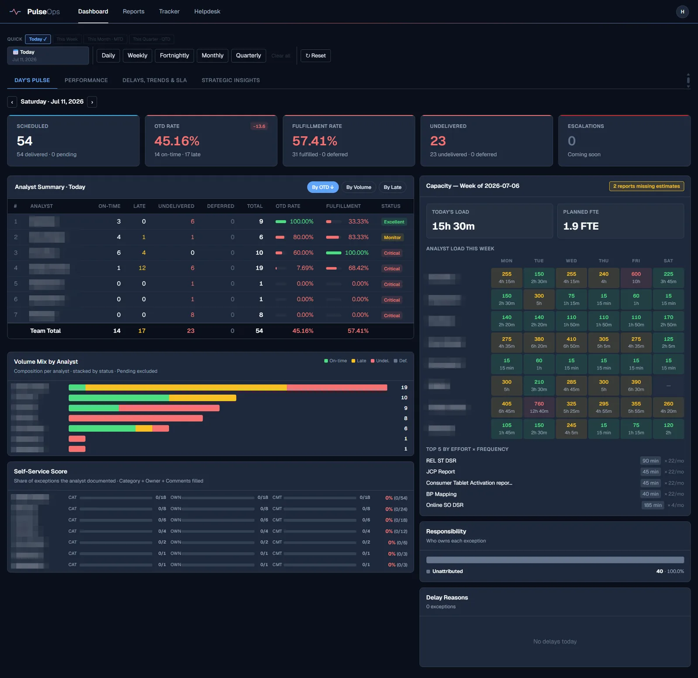

In production
PulseOps
Full-stack helpdesk & operations platform: SLA-tracked ticketing with business-hours pause/resume logic, role-based access, report-delivery tracking, and leadership KPI dashboards. Replaced a slow legacy complaints portal and a mesh of Excel trackers for my support team.
Read the case study